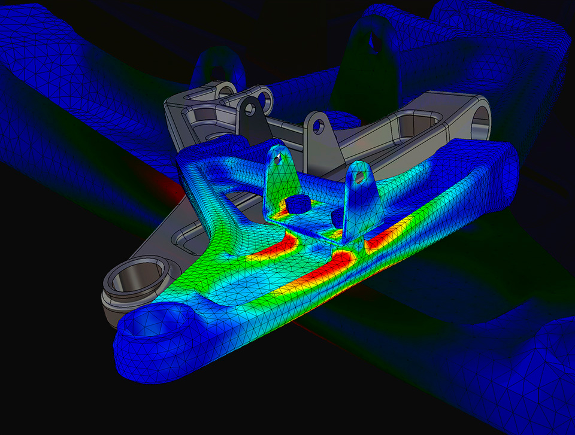
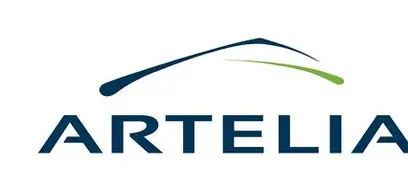
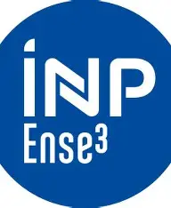

Diplômé en Mécanique des Structures de l'Ense3 (Grenoble INP), je me spécialise en calcul et simulation numérique — calcul éléments finis (FEA) et conception — à travers des expériences internationales dans l'énergie, le secteur pétrolier et la mobilité (Bosch, Artelia, FabLab Grenoble INP). Rigoureux et orienté résultat, je recherche un poste d'ingénieur calcul mécanique pour contribuer à des projets industriels stimulants. Ce dossier documente ma démarche complète — de la géométrie CAO à l'interprétation critique des résultats — sur des cas d'étude réels.
Caractérisation de la rigidité des drive units (moteur électrique de VAE) sous Abaqus : modèle simplifié représentant 80–90% de la rigidité globale, analyse de sensibilité statique par déplacements/rotations imposés, sous‑structuration (superéléments) pour l'intégration au vélo complet, chargement pédalier selon ISO 4210‑6, décomposition des contributions vélo/drive unit pour orienter les choix de renforcement structurel.

Analyses éléments finis thermo‑mécaniques non linéaires sous Ansys sur réseaux de tuyauteries pétrolières (ASME B31.3), étude paramétrique de coudes, modélisation d'assemblages boulonnés (BEAM188 / Bolt Pretension, ASME PCC‑1), sous‑modélisation locale.

Conception CAO de la transmission mécanique d'une hydrolienne (CATIA V5), analyses statiques/modales/harmoniques/transitoires sous Ansys, découplage fréquentiel amélioré de plus de 20%, validation expérimentale sur banc et en rivière.
Chaque étude documente l'ensemble de la démarche — CAO, hypothèses, chaîne de chargement, conditions aux limites, résultats, post‑traitement, identification des problèmes et diagnostic de convergence — pas seulement le résultat final.
Géométrie CAO réelle, chaîne de chargement reconstituée par équilibres successifs (10 446 N à la rotule, 13 381 N au ressort), liaisons bushing/rotule justifiées. Diagnostic complet : mouvement de corps rigide identifié et corrigé (repère du Bushing), linéarité validée, convergence de maillage confirmée (30,79 MPa, qualité Skewness/Jacobien/Ratio de forme contrôlée). Statique entièrement validée — modale et harmonique à venir.
Projet Bosch eBike Systems (méthodologie anonymisée) : caractérisation de la rigidité d'une drive unit sous Abaqus (modèle simplifié à 80–90% de la rigidité réelle), analyse de sensibilité par déplacements/rotations imposés, sous‑structuration en superéléments, chargement pédalier selon ISO 4210‑6, décomposition vélo/drive unit pour orienter le renforcement structurel.